Temporal data coverage
Pasqualina Vonlanthen & Jens Daniel Müller
12 October, 2023
Last updated: 2023-10-12
Checks: 7 0
Knit directory: bgc_argo_r_argodata/
This reproducible R Markdown analysis was created with workflowr (version 1.7.0). The Checks tab describes the reproducibility checks that were applied when the results were created. The Past versions tab lists the development history.
Great! Since the R Markdown file has been committed to the Git repository, you know the exact version of the code that produced these results.
Great job! The global environment was empty. Objects defined in the global environment can affect the analysis in your R Markdown file in unknown ways. For reproduciblity it’s best to always run the code in an empty environment.
The command set.seed(20211008) was run prior to running
the code in the R Markdown file. Setting a seed ensures that any results
that rely on randomness, e.g. subsampling or permutations, are
reproducible.
Great job! Recording the operating system, R version, and package versions is critical for reproducibility.
Nice! There were no cached chunks for this analysis, so you can be confident that you successfully produced the results during this run.
Great job! Using relative paths to the files within your workflowr project makes it easier to run your code on other machines.
Great! You are using Git for version control. Tracking code development and connecting the code version to the results is critical for reproducibility.
The results in this page were generated with repository version 723c772. See the Past versions tab to see a history of the changes made to the R Markdown and HTML files.
Note that you need to be careful to ensure that all relevant files for
the analysis have been committed to Git prior to generating the results
(you can use wflow_publish or
wflow_git_commit). workflowr only checks the R Markdown
file, but you know if there are other scripts or data files that it
depends on. Below is the status of the Git repository when the results
were generated:
Ignored files:
Ignored: .Rhistory
Ignored: .Rproj.user/
Ignored: output/
Unstaged changes:
Modified: analysis/load_argo_core.Rmd
Modified: code/start_background_job_core_load.R
Note that any generated files, e.g. HTML, png, CSS, etc., are not included in this status report because it is ok for generated content to have uncommitted changes.
These are the previous versions of the repository in which changes were
made to the R Markdown (analysis/coverage_timeseries.Rmd)
and HTML (docs/coverage_timeseries.html) files. If you’ve
configured a remote Git repository (see ?wflow_git_remote),
click on the hyperlinks in the table below to view the files as they
were in that past version.
| File | Version | Author | Date | Message |
|---|---|---|---|---|
| html | 770b125 | ds2n19 | 2023-10-11 | Build site. |
| html | 13ae27f | ds2n19 | 2023-10-09 | Build site. |
| Rmd | fc05391 | ds2n19 | 2023-10-09 | Changed core Argo location folders and run for 2013, 2014 and 2022 |
| html | c7759a2 | ds2n19 | 2023-10-04 | Build site. |
| Rmd | 6ad3f88 | ds2n19 | 2023-10-04 | update with 2023 data |
| html | 90ff007 | ds2n19 | 2023-10-02 | Build site. |
| html | 1e972c5 | ds2n19 | 2023-10-02 | Build site. |
| html | 7b3d8c5 | pasqualina-vonlanthendinenna | 2022-08-29 | Build site. |
| Rmd | 8e81570 | pasqualina-vonlanthendinenna | 2022-08-29 | load and add in core-argo data (1 month) |
| html | bdd516d | pasqualina-vonlanthendinenna | 2022-05-23 | Build site. |
| html | 4173c20 | jens-daniel-mueller | 2022-05-12 | Build site. |
| html | dfe89d7 | jens-daniel-mueller | 2022-05-12 | Build site. |
| html | 710edd4 | jens-daniel-mueller | 2022-05-11 | Build site. |
| Rmd | 2f20a76 | jens-daniel-mueller | 2022-05-11 | rebuild all after subsetting AB profiles and code cleaning |
| html | 68eff8b | jens-daniel-mueller | 2022-05-11 | Build site. |
| Rmd | cf4d1b6 | jens-daniel-mueller | 2022-05-11 | rerun with flag A and B subset |
| html | 6531981 | pasqualina-vonlanthendinenna | 2022-05-10 | Build site. |
| Rmd | bbafe7c | pasqualina-vonlanthendinenna | 2022-05-10 | updated profile counts timeseries |
| html | f196b7c | pasqualina-vonlanthendinenna | 2022-05-09 | Build site. |
| Rmd | a66f31c | pasqualina-vonlanthendinenna | 2022-05-09 | updated argo index |
| html | 3f012ba | pasqualina-vonlanthendinenna | 2022-05-06 | Build site. |
| Rmd | 90d5e7c | pasqualina-vonlanthendinenna | 2022-05-06 | added timeseries of flag A dataframe |
| html | 6a6e874 | pasqualina-vonlanthendinenna | 2022-04-29 | Build site. |
| html | 2d44f8a | pasqualina-vonlanthendinenna | 2022-04-29 | Build site. |
| html | e61c08e | pasqualina-vonlanthendinenna | 2022-04-27 | Build site. |
| html | 10036ed | pasqualina-vonlanthendinenna | 2022-04-26 | Build site. |
| html | c03dd24 | pasqualina-vonlanthendinenna | 2022-04-20 | Build site. |
| html | 8805f99 | pasqualina-vonlanthendinenna | 2022-04-11 | Build site. |
| html | 905d82f | pasqualina-vonlanthendinenna | 2022-02-15 | Build site. |
| html | b8a6482 | pasqualina-vonlanthendinenna | 2022-01-03 | Build site. |
| html | 7f3cfe7 | pasqualina-vonlanthendinenna | 2021-12-17 | Build site. |
| Rmd | c4cce1a | pasqualina-vonlanthendinenna | 2021-12-17 | updated cache data |
| html | 123e5db | pasqualina-vonlanthendinenna | 2021-12-07 | Build site. |
| Rmd | f8abe59 | pasqualina-vonlanthendinenna | 2021-12-07 | suppressed output messages and updated plots |
| html | 930ea26 | pasqualina-vonlanthendinenna | 2021-11-26 | Build site. |
| html | e09c60b | pasqualina-vonlanthendinenna | 2021-11-26 | Build site. |
| html | 1305d6b | pasqualina-vonlanthendinenna | 2021-11-26 | Build site. |
| html | 5e2b8a5 | pasqualina-vonlanthendinenna | 2021-11-26 | Build site. |
| html | 3df4daf | pasqualina-vonlanthendinenna | 2021-11-26 | Build site. |
| html | 7a01367 | pasqualina-vonlanthendinenna | 2021-11-12 | Build site. |
| html | 284003d | pasqualina-vonlanthendinenna | 2021-11-11 | Build site. |
| html | 6276d6c | pasqualina-vonlanthendinenna | 2021-11-11 | Build site. |
| html | 358d54e | pasqualina-vonlanthendinenna | 2021-11-05 | Build site. |
| Rmd | 395f3ec | pasqualina-vonlanthendinenna | 2021-11-05 | added total profile count |
| html | a103f60 | pasqualina-vonlanthendinenna | 2021-11-05 | Build site. |
| Rmd | 31576f9 | pasqualina-vonlanthendinenna | 2021-11-05 | changed QC flag maps |
| html | fbd5bac | pasqualina-vonlanthendinenna | 2021-11-04 | Build site. |
| html | 68977a1 | pasqualina-vonlanthendinenna | 2021-10-26 | Build site. |
| Rmd | 062b272 | pasqualina-vonlanthendinenna | 2021-10-26 | added ggsave |
| html | b57291a | pasqualina-vonlanthendinenna | 2021-10-26 | Build site. |
| html | bba33bf | pasqualina-vonlanthendinenna | 2021-10-26 | Build site. |
| Rmd | 4bc1859 | pasqualina-vonlanthendinenna | 2021-10-26 | run with full data |
| html | cabaa10 | jens-daniel-mueller | 2021-10-22 | Build site. |
| Rmd | e2a1f9e | jens-daniel-mueller | 2021-10-22 | code revision |
| html | f7ef44f | jens-daniel-mueller | 2021-10-22 | Build site. |
| Rmd | ee2b3f3 | jens-daniel-mueller | 2021-10-22 | code revision |
| html | aa7280d | jens-daniel-mueller | 2021-10-22 | Build site. |
| Rmd | ca7ba6b | jens-daniel-mueller | 2021-10-22 | adding revised code |
| html | d84c904 | pasqualina-vonlanthendinenna | 2021-10-22 | Build site. |
| html | 8ecdb43 | pasqualina-vonlanthendinenna | 2021-10-22 | Build site. |
| Rmd | 2b22099 | pasqualina-vonlanthendinenna | 2021-10-22 | edited text |
| html | c81f21c | pasqualina-vonlanthendinenna | 2021-10-21 | Build site. |
| html | b55928d | pasqualina-vonlanthendinenna | 2021-10-21 | Build site. |
| Rmd | 58c24b6 | pasqualina-vonlanthendinenna | 2021-10-21 | timeseries attempt 2, added description |
| html | 62d8519 | pasqualina-vonlanthendinenna | 2021-10-20 | Build site. |
| html | b8feac2 | pasqualina-vonlanthendinenna | 2021-10-20 | Build site. |
| Rmd | b7b1806 | pasqualina-vonlanthendinenna | 2021-10-20 | adding revised code |
| html | 701fffa | pasqualina-vonlanthendinenna | 2021-10-20 | Build site. |
| Rmd | b88a839 | pasqualina-vonlanthendinenna | 2021-10-20 | adding revised code |
Task
Count the number of bgc-argo profiles, and plot their evolution over time.
Load data
BGC-Argo data
Read the files created in loading_data.html:
bgc_metadata <-
read_rds(file = paste0(path_argo_preprocessed, "/bgc_metadata.rds"))Core-Argo data
core_metadata <- read_rds(file = paste0(path_argo_core_preprocessed, "/core_metadata.rds"))Basin data
basinmask <-
read_csv(paste(path_emlr_utilities,
"basin_mask_WOA18.csv",
sep = ""),
col_types = cols("MLR_basins" = col_character()))
basinmask <- basinmask %>%
filter(MLR_basins == unique(basinmask$MLR_basins)[1]) %>%
select(lon, lat, basin_AIP)
map <-
read_rds(paste(path_emlr_utilities,
"map_landmask_WOA18.rds",
sep = ""))QC flags
QC flags for values (‘flag’ column) are
between 1 and 8, where:
- 1 is ‘good’ data
- 2 is ‘probably good’ data,
- 3 is ‘probably bad’ data,
- 4 is ‘bad’ data,
- 5 is ‘value changed’,
- 8 is ‘estimated value’,
- 9 is ‘missing value’.
- (6 and 7 are not used)
Profile QC flags (‘profile_flag’
column) are QC codes attributed to the entire profile, and indicate the
number of depth levels (in %) where the value is considered to be good
data (QC flags of 1, 2, 5, and 8):
- ‘A’ means 100% of profile levels contain good data,
- ‘B’ means 75-<100% of profile levels contain good data,
- ‘C’ means 50-75% of profile levels contain good data,
- ‘D’ means 25-50% of profile levels contain good data,
- ‘E’ means >0-50% of profile levels contain good data,
- ‘F’ means 0% of profile levels contain good data.
Number of BGC-profiles
Per parameter
# count the number of profiles per parameter
bgc_profile_counts <- bgc_metadata %>%
select(platform_number, cycle_number, date, profile_temp_qc,
profile_doxy_qc, profile_ph_in_situ_total_qc, profile_nitrate_qc) %>%
pivot_longer(cols = profile_temp_qc:profile_nitrate_qc,
names_to = "parameter",
values_to = "profile_flag",
names_prefix = "profile_") %>%
mutate(year = year(date),
month = month(date)) %>%
count(year, month, parameter, profile_flag) %>% # count the number of occurrences of unique flags for each parameter, in each month of each year
filter(!is.na(profile_flag),
profile_flag != "")
# the 'parameter' column contains character strings of either 'doxy_qc', 'ph_in_situ_total_qc', or 'nitrate_qc', with the corresponding profile QC flag in the 'profile_flag' column
# count the total number of profiles for each parameter and each flag:
bgc_profile_counts_total <- bgc_metadata %>%
select(platform_number, cycle_number, date,
profile_doxy_qc, profile_ph_in_situ_total_qc, profile_nitrate_qc) %>%
pivot_longer(cols = profile_doxy_qc:profile_nitrate_qc,
names_to = "parameter",
values_to = "profile_flag",
names_prefix = "profile_") %>%
mutate(year = year(date),
month = month(date)) %>%
count(parameter, profile_flag) %>% # count the number of occurrences of flags for each parameter
filter(!is.na(profile_flag),
profile_flag != "")# bgc_merge <- read_rds(file = paste0(path_argo_preprocessed, "/bgc_merge.rds"))
#
# bgc_profile_counts_test <- bgc_merge %>%
# select(platform_number, cycle_number, date, profile_temp_qc,
# profile_doxy_qc, profile_ph_in_situ_total_qc, profile_nitrate_qc) %>%
# unite('platform_cycle', platform_number:cycle_number, sep = '_', remove = FALSE) %>%
# mutate(year = year(date),
# month = month(date))
#
# bgc_profile_counts_test_n <- bgc_profile_counts_test %>%
# pivot_longer(cols = profile_temp_qc:profile_nitrate_qc,
# values_to = 'profile_flag',
# names_to = 'parameter',
# names_prefix = 'profile_') %>%
# distinct(year, month, platform_cycle, parameter, profile_flag) %>%
# group_by(year, month, parameter, profile_flag) %>%
# count(platform_cycle) %>%
# group_by(year, month, parameter, profile_flag) %>%
# summarise(n = sum(n)) %>%
# filter(!is.na(profile_flag),
# profile_flag != "")
#
#
# # total number of profiles
# print(sum(bgc_profile_counts_test_n$n))
#
# bgc_profile_counts_test_n %>%
# group_by(parameter) %>%
# group_split(parameter) %>%
# map(
# ~ ggplot(data = .x,
# aes(x = month, y = n, col = profile_flag))+
# geom_line()+
# geom_point()+
# facet_wrap(~year,
# ncol = 10)+
# labs(title = paste0('parameter:', unique(.x$parameter)))
# )
# gives the same result as using bgc_metadata Total number of profiles
Total number of BGC-profiles (all flags A-F)
# count the total number of profiles, regardless of QC flag
total_data_count <- bgc_metadata %>%
select(platform_number, cycle_number, date,
profile_doxy_qc, profile_ph_in_situ_total_qc, profile_nitrate_qc) %>%
pivot_longer(cols = profile_doxy_qc:profile_nitrate_qc,
names_to = "parameter",
values_to = "profile_flag",
names_prefix = "profile_") %>%
mutate(year = year(date),
month = month(date)) %>%
count(parameter, profile_flag) %>% # count the number of occurrences of flags for each parameter
filter(!is.na(profile_flag),
profile_flag != "") %>%
group_by(parameter) %>%
summarise(n = sum(n))
knitr::kable(total_data_count, caption = 'total number of profiles', format = 'markdown')| parameter | n |
|---|---|
| doxy_qc | 161823 |
| nitrate_qc | 54269 |
| ph_in_situ_total_qc | 40452 |
Total number of profiles with usable data (flags A-E)
# count the number of profiles which have QC flags of A, B, C, D, or E (profiles which contain data that can be used)
usable_data_count <- bgc_metadata %>%
select(platform_number, cycle_number, date,
profile_doxy_qc, profile_ph_in_situ_total_qc, profile_nitrate_qc) %>%
pivot_longer(cols = profile_doxy_qc:profile_nitrate_qc,
names_to = "parameter",
values_to = "profile_flag",
names_prefix = "profile_") %>%
mutate(year = year(date),
month = month(date)) %>%
count(parameter, profile_flag) %>% # count the number of occurrences of flags for each parameter
filter(!is.na(profile_flag),
profile_flag != "",
profile_flag != 'F') %>%
group_by(parameter) %>%
summarise(n = sum(n))
knitr::kable(usable_data_count,
caption = 'total number of profiles with QC flags A, B, C, D, E',
format = 'markdown')| parameter | n |
|---|---|
| doxy_qc | 143567 |
| nitrate_qc | 47877 |
| ph_in_situ_total_qc | 21349 |
Total number of BGC-profiles with flag A (100% good data)
# count the number of profiles with QC flag A
A_data_count <- bgc_metadata %>%
select(platform_number, cycle_number, date, profile_temp_qc,
profile_doxy_qc, profile_ph_in_situ_total_qc, profile_nitrate_qc) %>%
pivot_longer(cols = profile_temp_qc:profile_nitrate_qc,
names_to = "parameter",
values_to = "profile_flag",
names_prefix = "profile_") %>%
mutate(year = year(date),
month = month(date)) %>%
count(parameter, profile_flag) %>% # count the number of occurrences of flags for each parameter
filter(!is.na(profile_flag),
profile_flag != "",
profile_flag == 'A') %>%
group_by(parameter) %>%
summarise(n = sum(n))
knitr::kable(A_data_count,
caption = 'total number of profiles with QC flag A',
format = 'markdown')| parameter | n |
|---|---|
| doxy_qc | 112828 |
| nitrate_qc | 45908 |
| ph_in_situ_total_qc | 15843 |
| temp_qc | 51664 |
flag_AB <- read_rds(file = paste0(path_argo_preprocessed, "/bgc_merge_flag_AB.rds"))
flag_AB <- flag_AB %>%
unite('platform_cycle', platform_number:cycle_number, sep = '_', remove = FALSE) %>%
mutate(year = year(date),
month = month(date))
flag_AB_n <- flag_AB %>%
distinct(year, month, platform_cycle) %>%
count(year, month)
# total number of profiles
print(sum(flag_AB_n$n))[1] 18801flag_AB_n %>%
ggplot(aes(x = month, y = n))+
geom_point()+
geom_line()+
facet_wrap(~year, ncol = 11)+
labs(title = 'bgc_merge_flag_AB.rds dataframe (temp & pH flag A)')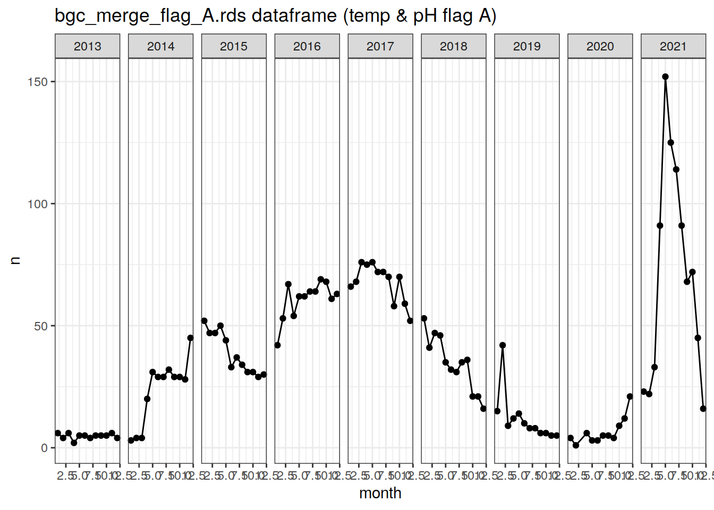
################################
# using the flag A pH and temperature dataframe which doesn't remove NA values
# flag_A_test <- bgc_merge_flag_A_test %>%
# unite('platform_cycle', platform_number:cycle_number, sep = '_', remove = FALSE) %>%
# mutate(year = year(date),
# month = month(date))
#
# flag_A_test_n <- flag_A_test %>%
# distinct(year, month, platform_cycle) %>%
# group_by(year, month) %>%
# count(platform_cycle) %>%
# group_by(year, month) %>%
# summarise(n = sum(n))
#
#
# # total number of profiles
# print(sum(flag_A_test_n$n))
#
# flag_A_test_n %>%
# ggplot(aes(x = month, y = n))+
# geom_point()+
# geom_line()+
# facet_wrap(~year, ncol = 10)+
# labs(title = 'bgc_merge_flag_AB.rds dataframe (temp & pH flag A)')Total number of F-flag BGC profiles (unusable data)
# count the number of profiles with QC Flag F (not usable data)
F_data_count <- bgc_metadata %>%
select(platform_number, cycle_number, date,
profile_doxy_qc, profile_ph_in_situ_total_qc, profile_nitrate_qc) %>%
pivot_longer(cols = profile_doxy_qc:profile_nitrate_qc,
names_to = "parameter",
values_to = "profile_flag",
names_prefix = "profile_") %>%
mutate(year = year(date),
month = month(date)) %>%
count(parameter, profile_flag) %>% # count the number of occurrences of flags for each parameter
filter(!is.na(profile_flag),
profile_flag != "",
profile_flag == 'F') %>%
group_by(parameter) %>%
summarise(n = sum(n))
knitr::kable(F_data_count,
caption = 'total number of profiles with QC flag F',
format = 'markdown')| parameter | n |
|---|---|
| doxy_qc | 18256 |
| nitrate_qc | 6392 |
| ph_in_situ_total_qc | 19103 |
Plot the evolution of the number of profiles over time
bgc_profile_counts %>%
ggplot(aes(x = month, y = n, col = profile_flag)) +
geom_line() +
geom_point() +
facet_grid(parameter ~ year,
scales = "free_y") +
scale_x_continuous(breaks = seq(1,12,4))+
labs(x = 'month', y = 'number of profiles', title = 'number of profiles per year')# draw separate plots for the separate parameters
bgc_profile_counts %>%
group_split(parameter) %>% # creates a separate flag count for each parameter
map(
~ ggplot(data = .x, # repeats the ggplot for each separate parameter
aes(
x = month, y = n, col = profile_flag
)) +
geom_line() +
geom_point() +
facet_grid(. ~ year,
scales = "free_y") +
labs(title = paste("Parameter: ", unique(.x$parameter)),
x = 'month', y = 'number of profiles',
col = 'profile QC flag') +
scale_x_continuous(breaks = seq(1,12,4))
)[[1]]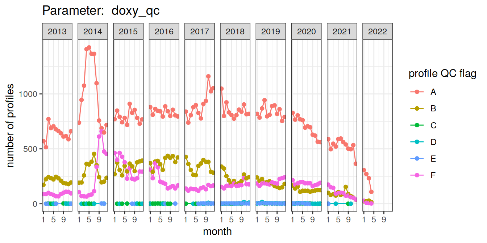
| Version | Author | Date |
|---|---|---|
| 1e972c5 | ds2n19 | 2023-10-02 |
| f196b7c | pasqualina-vonlanthendinenna | 2022-05-09 |
| 7f3cfe7 | pasqualina-vonlanthendinenna | 2021-12-17 |
| 7a01367 | pasqualina-vonlanthendinenna | 2021-11-12 |
| 6276d6c | pasqualina-vonlanthendinenna | 2021-11-11 |
| bba33bf | pasqualina-vonlanthendinenna | 2021-10-26 |
| aa7280d | jens-daniel-mueller | 2021-10-22 |
| b8feac2 | pasqualina-vonlanthendinenna | 2021-10-20 |
| 701fffa | pasqualina-vonlanthendinenna | 2021-10-20 |
[[2]]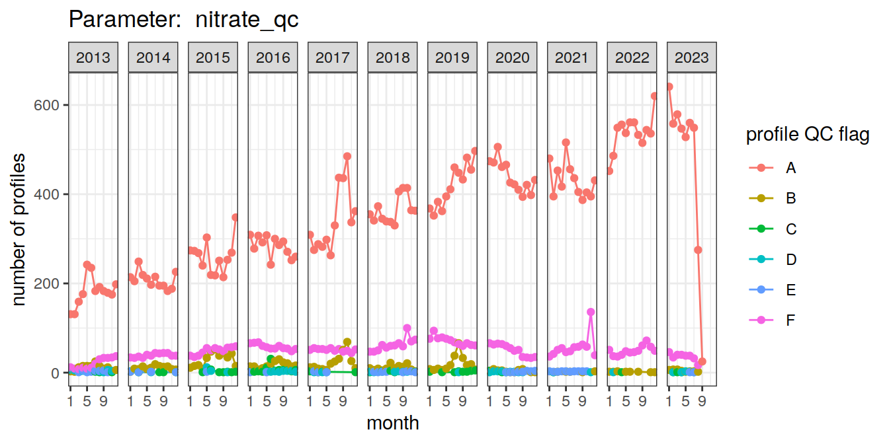
| Version | Author | Date |
|---|---|---|
| 1e972c5 | ds2n19 | 2023-10-02 |
| f196b7c | pasqualina-vonlanthendinenna | 2022-05-09 |
| 7f3cfe7 | pasqualina-vonlanthendinenna | 2021-12-17 |
| 7a01367 | pasqualina-vonlanthendinenna | 2021-11-12 |
| 6276d6c | pasqualina-vonlanthendinenna | 2021-11-11 |
| bba33bf | pasqualina-vonlanthendinenna | 2021-10-26 |
| aa7280d | jens-daniel-mueller | 2021-10-22 |
| b8feac2 | pasqualina-vonlanthendinenna | 2021-10-20 |
| 701fffa | pasqualina-vonlanthendinenna | 2021-10-20 |
[[3]]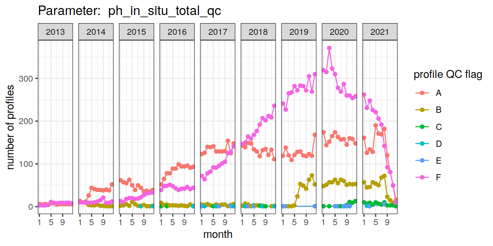
| Version | Author | Date |
|---|---|---|
| 1e972c5 | ds2n19 | 2023-10-02 |
| f196b7c | pasqualina-vonlanthendinenna | 2022-05-09 |
| 7f3cfe7 | pasqualina-vonlanthendinenna | 2021-12-17 |
| 7a01367 | pasqualina-vonlanthendinenna | 2021-11-12 |
| 6276d6c | pasqualina-vonlanthendinenna | 2021-11-11 |
| bba33bf | pasqualina-vonlanthendinenna | 2021-10-26 |
| aa7280d | jens-daniel-mueller | 2021-10-22 |
| b8feac2 | pasqualina-vonlanthendinenna | 2021-10-20 |
| 701fffa | pasqualina-vonlanthendinenna | 2021-10-20 |
[[4]]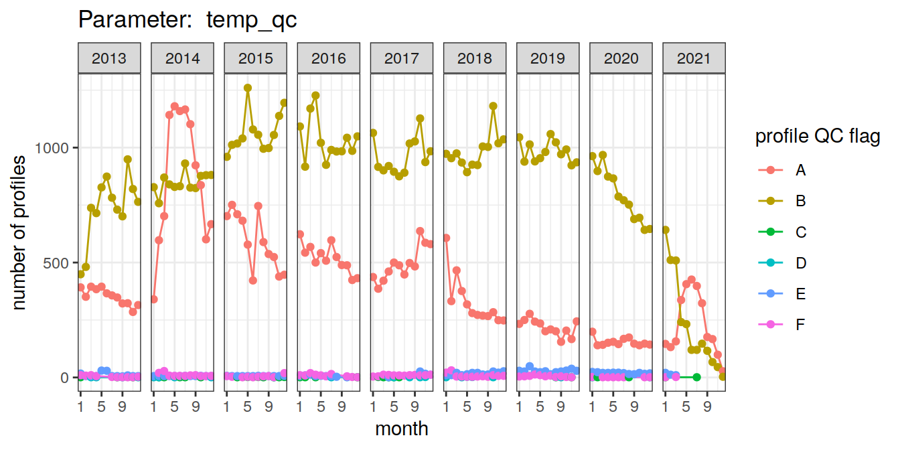
ggsave("output/figures/time_series_profiles_per_parameter.png",
width = 7,
height = 4)All flag A
# count the number of profiles which have a QC flag of A for all three BGC parameters
# the if_all(starts_with()) notation allows to filter over a range of columns simultaneously
# this new approach is identical to your previous solution
# except that it filters also the pres, temp, and sal flags
# (plotted below)
bgc_profile_counts_total_A <- bgc_metadata %>%
select(platform_number, cycle_number, date,
profile_pres_qc:profile_ph_in_situ_total_qc) %>%
filter(if_all(starts_with("profile_"), ~. == 'A')) %>%
pivot_longer(cols = starts_with("profile_"),
names_to = "parameter",
values_to = "profile_flag",
names_prefix = "profile_") %>%
mutate(year = year(date),
month = month(date)) %>%
distinct(platform_number, cycle_number, year, month) %>%
count(year, month)bgc_profile_counts_total_A %>%
ggplot(aes(x = month, y = n)) +
geom_line() +
geom_point() +
facet_grid(. ~ year,
scales = "free_y") +
scale_x_continuous(breaks = seq(1,12,4)) +
labs(x = 'month', y = 'number of profiles',
title = "Number of profiles",
subtitle = "All three BGC + core parameters (QC flag A)")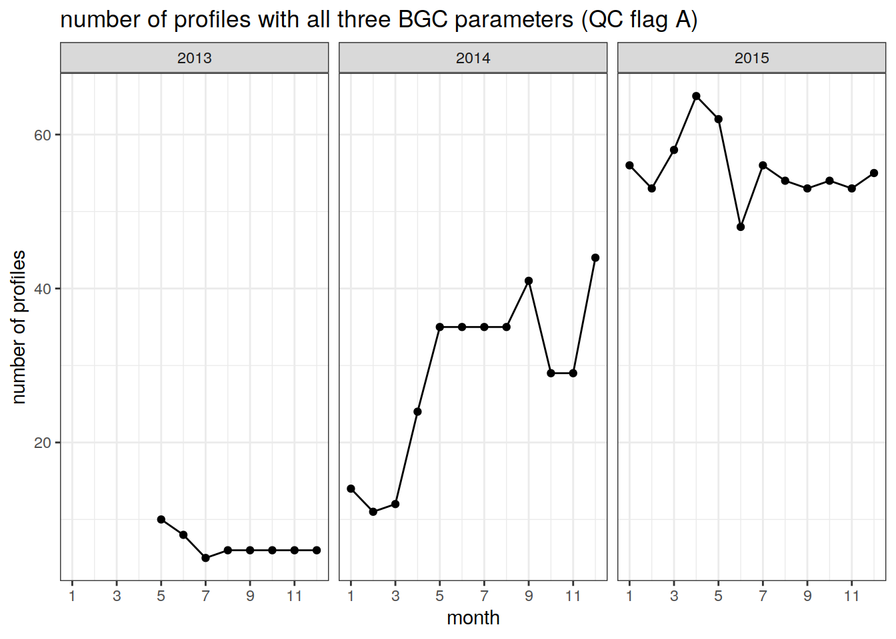
| Version | Author | Date |
|---|---|---|
| 1e972c5 | ds2n19 | 2023-10-02 |
| 710edd4 | jens-daniel-mueller | 2022-05-11 |
| f196b7c | pasqualina-vonlanthendinenna | 2022-05-09 |
| 7f3cfe7 | pasqualina-vonlanthendinenna | 2021-12-17 |
| 7a01367 | pasqualina-vonlanthendinenna | 2021-11-12 |
| bba33bf | pasqualina-vonlanthendinenna | 2021-10-26 |
| cabaa10 | jens-daniel-mueller | 2021-10-22 |
| aa7280d | jens-daniel-mueller | 2021-10-22 |
| b55928d | pasqualina-vonlanthendinenna | 2021-10-21 |
| b8feac2 | pasqualina-vonlanthendinenna | 2021-10-20 |
| 701fffa | pasqualina-vonlanthendinenna | 2021-10-20 |
ggsave("output/figures/time_series_flag_A_profiles.png",
width = 7,
height = 4)All pH flag A
# count the number of profiles which have a QC flag of A for all three BGC parameters
# the if_all(starts_with()) notation allows to filter over a range of columns simultaneously
# this new approach is identical to your previous solution
# except that it filters also the pres, temp, and sal flags
# (plotted below)
bgc_profile_counts_total_A_pH <- bgc_metadata %>%
filter(profile_ph_in_situ_total_qc == "A") %>%
select(platform_number, cycle_number, date,
profile_temp_qc) %>%
mutate(year = year(date),
month = month(date)) %>%
distinct(platform_number, cycle_number, year, month, profile_temp_qc) %>%
count(year, month, profile_temp_qc)bgc_profile_counts_total_A_pH %>%
ggplot(aes(x = month, y = n, col = profile_temp_qc)) +
geom_line() +
geom_point() +
facet_grid(. ~ year,
scales = "free_y") +
scale_x_continuous(breaks = seq(1,12,4)) +
labs(x = 'month', y = 'number of profiles',
title = "Number of profiles",
subtitle = "All three BGC + core parameters (QC flag A)")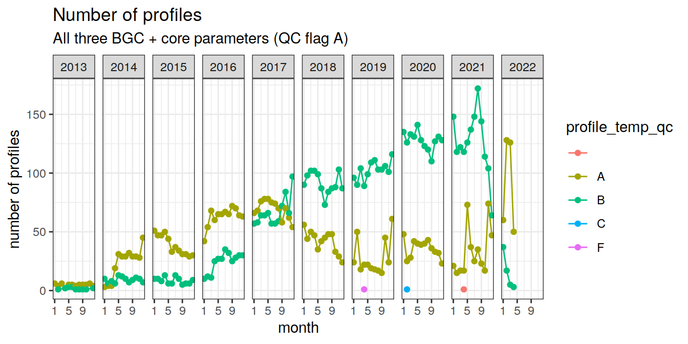
ggsave("output/figures/time_series_flag_A_profiles_pH.png",
width = 7,
height = 4)By region
# bgc_metadata <- bgc_metadata %>%
# mutate(
# lat = cut(lat, seq(-90, 90, 1), seq(-89.5, 89.5, 1)),
# lat = as.numeric(as.character(lat)),
# lon = cut(lon, seq(20, 380, 1), seq(20.5, 379.5, 1)),
# lon = as.numeric(as.character(lon))
# )
bgc_grid <- bgc_metadata %>%
distinct(lat, lon)
bgc_grid <- inner_join(
basinmask, bgc_grid
)
map +
geom_raster(data = basinmask,
aes(lon, lat, fill = basin_AIP)) +
geom_raster(data = bgc_grid,
aes(lon, lat)) +
scale_fill_brewer(palette = "Dark2")
| Version | Author | Date |
|---|---|---|
| 1e972c5 | ds2n19 | 2023-10-02 |
| f196b7c | pasqualina-vonlanthendinenna | 2022-05-09 |
| 8805f99 | pasqualina-vonlanthendinenna | 2022-04-11 |
| 7f3cfe7 | pasqualina-vonlanthendinenna | 2021-12-17 |
| 7a01367 | pasqualina-vonlanthendinenna | 2021-11-12 |
| 6276d6c | pasqualina-vonlanthendinenna | 2021-11-11 |
| bba33bf | pasqualina-vonlanthendinenna | 2021-10-26 |
| aa7280d | jens-daniel-mueller | 2021-10-22 |
rm(bgc_grid)bgc_profile_counts_total_A_region <-
inner_join(bgc_metadata,
basinmask) %>%
select(platform_number, cycle_number, date,
profile_doxy_qc, profile_ph_in_situ_total_qc, profile_nitrate_qc,
basin_AIP) %>%
filter(if_all(starts_with("profile_"), ~. == 'A')) %>%
pivot_longer(cols = profile_doxy_qc:profile_nitrate_qc,
names_to = "parameter",
values_to = "profile_flag",
names_prefix = "profile_") %>%
mutate(year = year(date),
month = month(date)) %>%
distinct(platform_number, cycle_number, year, month, basin_AIP) %>%
count(year, month, basin_AIP)bgc_profile_counts_total_A_region %>%
ggplot(aes(x = month, y = n, col = basin_AIP)) +
geom_line() +
geom_point() +
facet_grid(. ~ year,
scales = "free_y") +
scale_x_continuous(breaks = seq(1,12,2)) +
labs(x = 'month', y = 'number of profiles',
title = "Number of profiles",
subtitle = "All three BGC + core parameters (QC flag A)")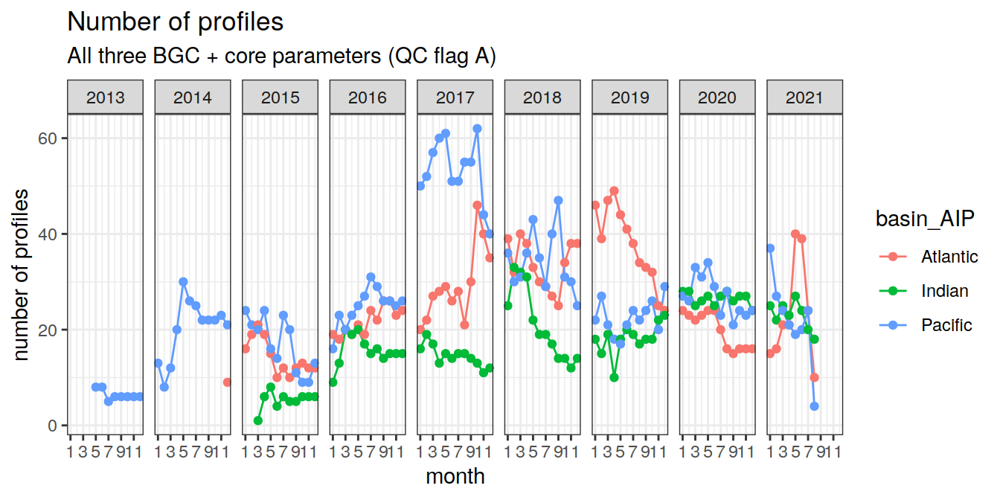
| Version | Author | Date |
|---|---|---|
| 1e972c5 | ds2n19 | 2023-10-02 |
| f196b7c | pasqualina-vonlanthendinenna | 2022-05-09 |
| 7f3cfe7 | pasqualina-vonlanthendinenna | 2021-12-17 |
| 7a01367 | pasqualina-vonlanthendinenna | 2021-11-12 |
| bba33bf | pasqualina-vonlanthendinenna | 2021-10-26 |
| cabaa10 | jens-daniel-mueller | 2021-10-22 |
| aa7280d | jens-daniel-mueller | 2021-10-22 |
ggsave("output/figures/time_series_profiles_per_region.png",
width = 7,
height = 4)Remove BGC data
rm(list = ls(pattern = 'bgc_'))
rm(list = ls(pattern = '_count'))Number of Core-Profiles
Core- temperature and salinity
core_profile_counts <- core_metadata %>%
select(platform_number, cycle_number, date,
profile_temp_qc, profile_psal_qc) %>%
pivot_longer(cols = profile_temp_qc:profile_psal_qc,
names_to = "parameter",
values_to = "profile_flag",
names_prefix = "profile_") %>%
mutate(year = year(date),
month = month(date)) %>%
count(year, month, parameter, profile_flag) %>% # count the number of occurrences of unique flags for each parameter, in each month of each year
filter(!is.na(profile_flag),
profile_flag != "")
core_profile_counts_total <- core_metadata %>%
select(platform_number, cycle_number, date,
profile_temp_qc, profile_psal_qc) %>%
pivot_longer(cols = profile_temp_qc:profile_psal_qc,
names_to = "parameter",
values_to = "profile_flag",
names_prefix = "profile") %>%
mutate(year = year(date),
month = month(date)) %>%
count(parameter, profile_flag) %>%
filter(!is.na(profile_flag),
profile_flag != "")Total number of profiles
Total number of profiles, regardless of QC flags
# count the total number of core profiles, regardless of QC flag
total_data_count_core <- core_metadata %>%
select(platform_number, cycle_number, date,
profile_temp_qc, profile_psal_qc) %>%
pivot_longer(cols = profile_temp_qc:profile_psal_qc,
names_to = 'parameter',
values_to = 'profile_flag',
names_prefix = 'profile_') %>%
mutate(year = year(date),
month = month(date)) %>%
count(parameter, profile_flag) %>%
filter(!is.na(profile_flag),
profile_flag != "") %>%
group_by(parameter) %>%
summarise(n = sum(n))
knitr::kable(total_data_count_core, caption = 'total number of profiles', format = 'markdown')| parameter | n |
|---|---|
| psal_qc | 1394616 |
| temp_qc | 1396244 |
Number of core profiles with usable data (flags A, B, C, D, and E)
# count the number of core tempa and sal profiles which have QC flags of A, B, C, D, or E (profiles which contain data that can be used)
usable_data_count_core <- core_metadata %>%
select(platform_number, cycle_number, date,
profile_temp_qc, profile_psal_qc) %>%
pivot_longer(cols = profile_temp_qc:profile_psal_qc,
names_to = "parameter",
values_to = "profile_flag",
names_prefix = "profile_") %>%
mutate(year = year(date),
month = month(date)) %>%
count(parameter, profile_flag) %>%
filter(!is.na(profile_flag),
profile_flag !="",
profile_flag != "F") %>%
group_by(parameter) %>%
summarise(n = sum(n))
knitr::kable(usable_data_count_core,
caption = 'total number of core profiles with QC flags A, B, C, D, E',
format = 'markdown')| parameter | n |
|---|---|
| psal_qc | 1270474 |
| temp_qc | 1372634 |
Total number of core-profiles with flag A (best data)
# count the number of core profiles with QC flag A
A_data_count_core <- core_metadata %>%
select(platform_number, cycle_number, date,
profile_temp_qc, profile_psal_qc) %>%
pivot_longer(cols = profile_temp_qc:profile_psal_qc,
names_to = "parameter",
values_to = "profile_flag",
names_prefix = "profile_") %>%
mutate(year = year(date),
month = month(date)) %>%
count(parameter, profile_flag) %>%
filter(!is.na(profile_flag),
profile_flag != "",
profile_flag == 'A') %>%
group_by(parameter) %>%
summarise(n = sum(n))
knitr::kable(A_data_count_core,
caption = 'total number of core profiles with QC flag A',
format = 'markdown')| parameter | n |
|---|---|
| psal_qc | 950751 |
| temp_qc | 1095349 |
Total number of F-flag core profiles (0% good data)
# count the number of core profiles with QC Flag F (not usable data)
F_data_count_core <- core_metadata %>%
select(platform_number, cycle_number, date,
profile_temp_qc, profile_psal_qc) %>%
pivot_longer(cols = profile_temp_qc:profile_psal_qc,
names_to = "parameter",
values_to = "profile_flag",
names_prefix = "profile_") %>%
mutate(year = year(date),
month = month(date)) %>%
count(parameter, profile_flag) %>%
filter(!is.na(profile_flag),
profile_flag !="",
profile_flag == 'F') %>%
group_by(parameter) %>%
summarise(n = sum(n))
knitr::kable(F_data_count_core,
caption = 'total number of core profiles with QC flag F',
format = 'markdown')| parameter | n |
|---|---|
| psal_qc | 124142 |
| temp_qc | 23610 |
Plot the evolution of the total number of core profiles over time
# draw separate plots for the separate parameters
core_profile_counts %>%
group_split(parameter) %>% # creates a separate flag count for each parameter
map(
~ ggplot(data = .x, # repeats the ggplot for each separate parameter
aes(
x = month, y = n, col = profile_flag
)) +
geom_line() +
geom_point() +
facet_grid(. ~ year,
scales = "free_y") +
labs(title = paste("Parameter: ", unique(.x$parameter)),
x = 'month', y = 'number of profiles',
col = 'profile QC flag') +
scale_x_continuous(breaks = seq(1,12,4))
)[[1]]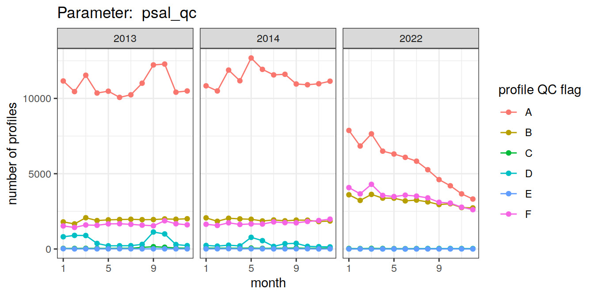
[[2]]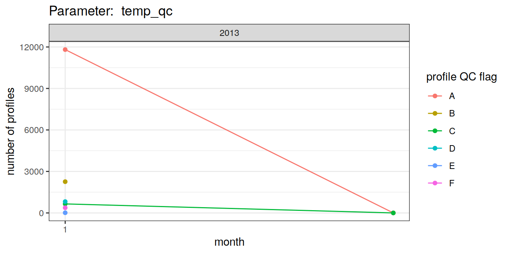
ggsave("output/figures/time_series_core_profiles_per_parameter.png",
width = 7,
height = 4)All flag A
# count the number of profiles which have a QC flag of A for all three BGC parameters
# the if_all(starts_with()) notation allows to filter over a range of columns simultaneously
core_profile_counts_total_A <- core_metadata %>%
select(platform_number, cycle_number, date,
profile_temp_qc, profile_psal_qc) %>%
filter(if_all(starts_with("profile_"), ~. == 'A')) %>%
pivot_longer(cols = starts_with("profile_"),
names_to = "parameter",
values_to = "profile_flag",
names_prefix = "profile_") %>%
mutate(year = year(date),
month = month(date)) %>%
distinct(platform_number, cycle_number, year, month) %>%
count(year, month)
core_profile_counts_total_A %>%
ggplot(aes(x = month, y = n)) +
geom_line() +
geom_point() +
facet_grid(. ~ year,
scales = "free_y") +
scale_x_continuous(breaks = seq(1,12,4)) +
labs(x = 'month', y = 'number of profiles',
title = "Number of profiles",
subtitle = "Core temp + sal profiles (QC flag A)")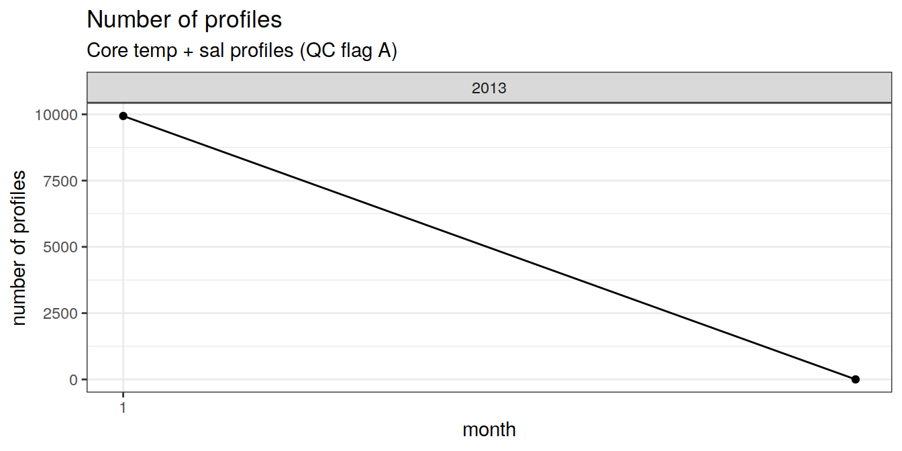
ggsave("output/figures/time_series_flag_A_core_profiles.png",
width = 7,
height = 4)All Core-temp flag A
core_profile_counts_total_A_temp <- core_metadata %>%
filter(profile_temp_qc == 'A') %>%
select(platform_number, cycle_number, date,
profile_temp_qc) %>%
mutate(year = year(date),
month = month(date)) %>%
distinct(platform_number, cycle_number, year, month, profile_temp_qc) %>%
count(year, month, profile_temp_qc)
# timeseries plot
core_profile_counts_total_A_temp %>%
ggplot(aes(x = month, y = n, col = profile_temp_qc)) +
geom_line() +
geom_point() +
facet_grid(. ~ year,
scales = "free_y") +
scale_x_continuous(breaks = seq(1,12,4)) +
labs(x = 'month', y = 'number of profiles',
title = "Number of profiles",
subtitle = "Core-temp (QC flag A)")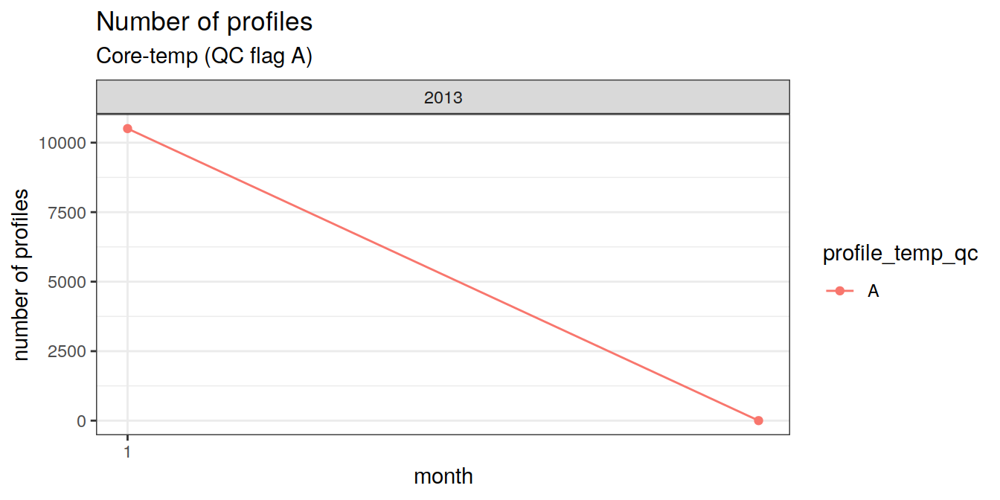
ggsave("output/figures/time_series_flag_A_core_profiles_temp.png",
width = 7,
height = 4)By Region
Number of A-Flag Core profiles by region
core_profile_counts_total_A_region <-
inner_join(core_metadata, basinmask) %>%
select(platform_number, cycle_number, date,
profile_temp_qc, profile_psal_qc, basin_AIP) %>%
filter(if_all(starts_with("profile_"), ~. == 'A')) %>%
pivot_longer(cols = profile_temp_qc:profile_psal_qc,
names_to = 'parameter',
values_to = 'profile_flag',
names_prefix = 'profile_') %>%
mutate(year = year(date),
month = month(date)) %>%
distinct(platform_number, cycle_number, year, month, basin_AIP) %>%
count(year, month, basin_AIP)
core_profile_counts_total_A_region %>%
ggplot(aes(x = month, y = n, col = basin_AIP)) +
geom_line() +
geom_point() +
facet_grid(. ~ year,
scales = "free_y") +
scale_x_continuous(breaks = seq(1,12,2)) +
labs(x = 'month', y = 'number of profiles',
title = "Number of profiles",
subtitle = "Core temp + sal (QC flag A)")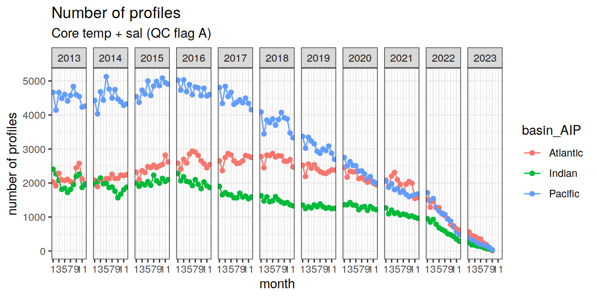
ggsave("output/figures/time_series_core_profiles_per_region.png",
width = 7,
height = 4)rm(list = ls(pattern = 'core_'))
rm(list = ls(pattern = '_core'))
sessionInfo()R version 4.2.2 (2022-10-31)
Platform: x86_64-pc-linux-gnu (64-bit)
Running under: openSUSE Leap 15.4
Matrix products: default
BLAS: /usr/local/R-4.2.2/lib64/R/lib/libRblas.so
LAPACK: /usr/local/R-4.2.2/lib64/R/lib/libRlapack.so
locale:
[1] LC_CTYPE=en_US.UTF-8 LC_NUMERIC=C
[3] LC_TIME=en_US.UTF-8 LC_COLLATE=en_US.UTF-8
[5] LC_MONETARY=en_US.UTF-8 LC_MESSAGES=en_US.UTF-8
[7] LC_PAPER=en_US.UTF-8 LC_NAME=C
[9] LC_ADDRESS=C LC_TELEPHONE=C
[11] LC_MEASUREMENT=en_US.UTF-8 LC_IDENTIFICATION=C
attached base packages:
[1] stats graphics grDevices utils datasets methods base
other attached packages:
[1] lubridate_1.9.0 timechange_0.1.1 argodata_0.1.0 forcats_0.5.2
[5] stringr_1.4.1 dplyr_1.0.10 purrr_0.3.5 readr_2.1.3
[9] tidyr_1.2.1 tibble_3.1.8 ggplot2_3.4.0 tidyverse_1.3.2
loaded via a namespace (and not attached):
[1] httr_1.4.4 sass_0.4.4 bit64_4.0.5
[4] vroom_1.6.0 jsonlite_1.8.3 modelr_0.1.10
[7] bslib_0.4.1 assertthat_0.2.1 highr_0.9
[10] googlesheets4_1.0.1 cellranger_1.1.0 yaml_2.3.6
[13] pillar_1.8.1 backports_1.4.1 glue_1.6.2
[16] digest_0.6.30 RColorBrewer_1.1-3 promises_1.2.0.1
[19] rvest_1.0.3 colorspace_2.0-3 htmltools_0.5.3
[22] httpuv_1.6.6 pkgconfig_2.0.3 broom_1.0.1
[25] haven_2.5.1 scales_1.2.1 whisker_0.4
[28] later_1.3.0 tzdb_0.3.0 git2r_0.30.1
[31] googledrive_2.0.0 generics_0.1.3 farver_2.1.1
[34] ellipsis_0.3.2 cachem_1.0.6 withr_2.5.0
[37] cli_3.4.1 magrittr_2.0.3 crayon_1.5.2
[40] readxl_1.4.1 evaluate_0.18 fs_1.5.2
[43] fansi_1.0.3 xml2_1.3.3 textshaping_0.3.6
[46] tools_4.2.2 hms_1.1.2 gargle_1.2.1
[49] lifecycle_1.0.3 munsell_0.5.0 reprex_2.0.2
[52] compiler_4.2.2 jquerylib_0.1.4 RNetCDF_2.6-1
[55] systemfonts_1.0.4 rlang_1.1.1 grid_4.2.2
[58] rstudioapi_0.14 labeling_0.4.2 rmarkdown_2.18
[61] gtable_0.3.1 DBI_1.1.3 R6_2.5.1
[64] knitr_1.41 fastmap_1.1.0 bit_4.0.5
[67] utf8_1.2.2 workflowr_1.7.0 rprojroot_2.0.3
[70] ragg_1.2.4 stringi_1.7.8 parallel_4.2.2
[73] Rcpp_1.0.10 vctrs_0.5.1 dbplyr_2.2.1
[76] tidyselect_1.2.0 xfun_0.35